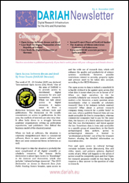

|
Latest News
 DARIAH Newsletter Issue 5 - February 2010 DARIAH Newsletter Issue 5 - February 2010
In this issue: -
- Funding Agency Roundtable Meeting
- Survey of Digital Humanities in Greece
- German Grid Activities Related to DARIAH
- Cooperation Statement from TextGrid, Wikimedia and Creative Commons
- European University Cyprus interview – Dr Charis Xinari
- Focus on DARIAH Partners:
- Archaeology Data Service (University of York, UK)
- Institute for Contemporary History (Ljubljana, Slovenia)
 Download Newsletter in PDF Format Download Newsletter in PDF Format
Tuesday, 08 December 2009
 Together with colleagues from the digital humanities research community, DARIAH has contributed to the latest issue of GridBriefing, a regular publication co-funded by the EC under the 7th Framework Programme. Together with colleagues from the digital humanities research community, DARIAH has contributed to the latest issue of GridBriefing, a regular publication co-funded by the EC under the 7th Framework Programme.
GridBriefing, and it's parent project GridTalk, bring the success stories of Europe's e-infrastructure to a wider audience. The project coordinates the dissemination outputs of EGEE and other European grid computing efforts. From the publication: "The era of eHumanities has arrived. No longer consigned to manuscript, memory or museums, digitisation is transferring the humanities to our computers. “Our original sources are scattered in many ways: historical documents in archives and libraries, works of art in museums, archaeological finds in ancient sites, disappearing languages on the tongues of native speakers,” says Peter Doorn, director of the proposed humanities infrastructure, DARIAH." Download the latest GridBriefing, or visit the GridTalk website.
Wednesday, 18 November 2009
Announcing the publication of DARIAH Newsletter, issue 4! In this issue: -
- Open Access: between dream and deed
- Case Study of Digital Humanities in the Republic of Ireland
- Case Study of Digital Humanities in Slovenia
- Second Project Phase of TextGrid Funded
- The Academy of Athens Interviews Professor Ioli Kalavrezou
- Focus on DARIAH Associate Partners:
- The Heritage Laboratory (LaPa)
- Fondazione Rinascimento Digitale
Download Newsletter in PDF Format
Wednesday, 11 November 2009
A meeting was held at King's College, London, on 26th and 27th October 2009, between representatives of the following networks, infrastructure projects, and planning initiatives working with digital technologies in the Arts and Humanities:
We identified the current fragmented environment where researchers operate in separate areas with often mutually incompatible technologies as a barrier to fully exploiting the transformative role that these technologies can potentially play. We resolved that our present, proposed, and future activities are interdependent and complementary and should be oriented towards working together to overcome barriers, and to create a shared environment where technology services can interoperate and be sustained, thus enabling new forms of research in the Humanities.
In order to achieve these goals we agreed to form the Coalition of Humanities and Arts Infrastructures and Networks – CHAIN. CHAIN will act as a forum forareas of shared interest to its participants, including:
- advocacy for an improved digital research infrastructure for the Humanities;
- development of sustainable business models;
- promotion of technical interoperability of resources, tools and services;
- promotion of good practice and relevant technical standards;
- development of a shared service infrastructure;
- coordinating approaches to legal and ethical issues;
- interactions with other relevant computing infrastructure initiatives;
- widening the geographical scope of our coalition.
CHAIN will promote an open culture where experiences, including successes and failures, can be shared and discussed, in order to support and promote the use of digital technologies in research in the Humanities.
Sheila Anderson, King's College London (DARIAH)
Andreas Aschenbrenner, State and University Library Göttingen (TextGrid, DARIAH)
David Greenbaum, University of California, Berkeley (Project Bamboo)
Seth Denbo, King's College, London (DARIAH)
Neil Fraistat, University of Maryland (centerNet)
Chad Kainz, University of Chicago (Project Bamboo)
Steven Krauwer, Utrecht University (CLARIN)
Lorna Hughes, King's College London (ADHO, NoC)
Tobias Blanke, King's College London (DARIAH)
Torsten Reimer, King's College London (arts-humanities.net)
David Robey, University of Oxford (NoC)
Harold Short, King's College London (ADHO)
Katherine Walter, University of Nebraska-Lincoln (centerNet)
Peter Wittenburg, Max-Planck-Gesellschaft (CLARIN)
Martin Wynne, University of Oxford (CLARIN, DARIAH)
For more information on CHAIN, see http://www.arts-humanities.net/chain
|
Thursday, 15 October 2009
 DARIAH Partner DANS (Data Archiving and Networked Services, The Netherlands) will host a virtual Speakers Corner during the international Open Access Week from 19 through 23 October with the aim of giving a big push to the debate on free access to research data. Famed experts are gearing up to provide contributions that will be talked about. DARIAH Partner DANS (Data Archiving and Networked Services, The Netherlands) will host a virtual Speakers Corner during the international Open Access Week from 19 through 23 October with the aim of giving a big push to the debate on free access to research data. Famed experts are gearing up to provide contributions that will be talked about.
The Open Access Week calls for attention to the importance of free access to scientific publications. DANS, the national institute for storage and accessibility of research data in the social sciences and humanities, seizes that week to force the free availability of research data in particular higher on the agenda. When such data become widely available for reuse, many more opportunities for innovative research will ensue. To that end, DANS is organizing the Open Data Speakers Corner at www.opendataspeakerscorner.nl. Each day of the week, the discussion will be opened from the special point of view of a well known person in the realm of scientific research, policy, publishing and the libraries. Three tried and tested debaters, especially asked to do so by DANS, will respond after which visitors are free to step onto the soapbox as well. All invited contributions wil be posted in Dutch and English.
More than twenty participants attended a workshop on "Digital curation in the human sciences", organised by Costis Dallas and Peter Doorn on 30/9 and 1/10 in Corfu as part of the 2009 European Conference on Digital Libraries. Speakers included H. Beedham (CESSDA), M. Wynne (CLARIN), S. Ross (University of Toronto), P. Constantopoulos (DCU), P. Buneman (DCC), T. Blanke (CeRch), R. van Horik (DANS), E. Toms (Dalhousie University) and E.A. Haswell (University of Copenhagen); a fascinating discussion, chaired by Seamus Ross, rounded up the workshop. Publication plans are currently under consideration.
Monday, 21 September 2009
DARIAH is pleased to report the publication of the second in a series of national digital humanities infrastructure reports. Covering the Republic of Ireland, the study aims to identify the development of a digital humanities infrastructure and to map all the relevant recommendations, strategies and initiatives put forward to enable the development of future policies. The study identifies the key policy makers and planning processes and accounts for achievement and under-achievement to date. Further, it addresses the challenges to the future development of a digital humanities infrastructure in Ireland.  Read Case Study Online Read Case Study Online
Download in PDF Format
Further studies of Greece and the United Kingdom to be published later in the year.
Announcing the publication of DARIAH Newsletter, issue 3! In this issue: - Sign of the Times: Thoughts from the Director of DARIAH
- DARIAH Publishes First of Series of Major Studies of National Digital Infrastructure Development
- Digital Humanities 2009 Conference - Report on Research Infrastructures Panel
- DARIAH - ACE - ARENA2 Workshop 1
- Interview with Professor Gerhard Lauer
- Focus on DARIAH partners:
- The Arnamagnæan Institute, University of Copenhagen
- The Academy of Athens
Download Newsletter in PDF Format
|
|
|
|
|
|
Page 12 of 14 |
|
Information brochure

Download PDF
|